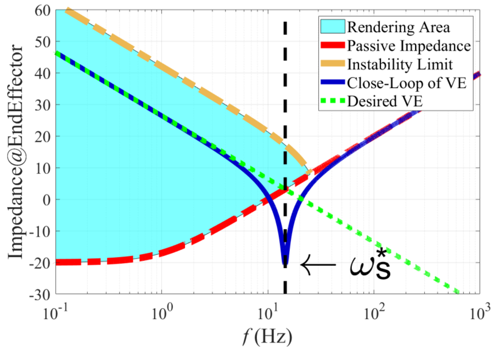

Abstract
Haptic interfaces require sepcial actuators with the ability to control the interaction force at high frequency. This project goal was to compare the performance of a novel actuation technology based on MR clutches (built by Exonetik) and traditionnal brushless electric motor. A model for predicting haptic rendering caracteristic was developpped and validated with experiments on a test bench with both types of actuators.
Publications & Resources
📄 Conference (IEEE WHC): L. Lebel, J. Verreault, J. L. Bigué, J. Plante and A. Girard, "Performance Study of Low Inertia Magnetorheological Actuators for Kinesthetic Haptic Devices," 2021 IEEE World Haptics Conference (WHC), pp. 103–108, 2021.
📄 arXiv preprint: L. Lebel, J. Verreault, J. L. Bigué, J. Plante and A. Girard, "Performance Study of Low Inertia Magnetorheological Actuators for Kinesthetic Haptic Devices," 2022.
Project Media
Test-bench

Rendering fundamental limits